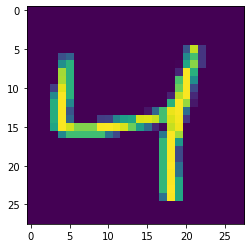

Handwritten digits¶
import os
os.environ['TF_CPP_MIN_LOG_LEVEL'] = '3' # suppress most warnings in TensorFlow
import numpy as np
import tensorflow as tf
from tensorflow import keras
import matplotlib.pyplot as plt
Init Plugin
Init Graph Optimizer
Init Kernel
From Wednesday¶
Here is some of the code from Wednesday. We made a bunch of different choices regarding how to build our neural network. Everything can be customized:
The structure of the network (how many layers, how many neurons)
What activation function to use (can use a different one on each layer): activations in Keras
What loss function to use: losses in Keras
What optimizer to use: optimizers in Keras
X = [[0,0],
[1,0],
[0,1],
[1,1]]
y = [0,1,1,1]
model = keras.Sequential(
[
keras.layers.InputLayer(input_shape = (2,)),
keras.layers.Dense(1,activation="sigmoid")
]
)
model.compile(loss="binary_crossentropy",
optimizer=keras.optimizers.SGD(
learning_rate=0.5
),
metrics=["accuracy"])
model.fit(X,y,epochs=100)
Epoch 1/100
1/1 [==============================] - 0s 123ms/step - loss: 1.2186 - accuracy: 0.2500
Epoch 2/100
1/1 [==============================] - 0s 6ms/step - loss: 0.9992 - accuracy: 0.0000e+00
Epoch 3/100
1/1 [==============================] - 0s 5ms/step - loss: 0.8427 - accuracy: 0.2500
Epoch 4/100
1/1 [==============================] - 0s 5ms/step - loss: 0.7356 - accuracy: 0.2500
Epoch 5/100
1/1 [==============================] - 0s 6ms/step - loss: 0.6630 - accuracy: 0.7500
Epoch 6/100
1/1 [==============================] - 0s 5ms/step - loss: 0.6128 - accuracy: 0.7500
Epoch 7/100
1/1 [==============================] - 0s 5ms/step - loss: 0.5768 - accuracy: 0.7500
Epoch 8/100
1/1 [==============================] - 0s 6ms/step - loss: 0.5500 - accuracy: 0.7500
Epoch 9/100
1/1 [==============================] - 0s 4ms/step - loss: 0.5290 - accuracy: 0.7500
Epoch 10/100
1/1 [==============================] - 0s 5ms/step - loss: 0.5120 - accuracy: 0.7500
Epoch 11/100
1/1 [==============================] - 0s 5ms/step - loss: 0.4977 - accuracy: 0.7500
Epoch 12/100
1/1 [==============================] - 0s 7ms/step - loss: 0.4854 - accuracy: 0.7500
Epoch 13/100
1/1 [==============================] - 0s 5ms/step - loss: 0.4744 - accuracy: 0.7500
Epoch 14/100
1/1 [==============================] - 0s 5ms/step - loss: 0.4645 - accuracy: 0.7500
Epoch 15/100
1/1 [==============================] - 0s 7ms/step - loss: 0.4553 - accuracy: 0.7500
Epoch 16/100
1/1 [==============================] - 0s 6ms/step - loss: 0.4468 - accuracy: 0.7500
Epoch 17/100
1/1 [==============================] - 0s 5ms/step - loss: 0.4388 - accuracy: 0.7500
Epoch 18/100
1/1 [==============================] - 0s 5ms/step - loss: 0.4312 - accuracy: 0.7500
Epoch 19/100
1/1 [==============================] - 0s 7ms/step - loss: 0.4239 - accuracy: 0.7500
Epoch 20/100
1/1 [==============================] - 0s 7ms/step - loss: 0.4170 - accuracy: 0.7500
Epoch 21/100
1/1 [==============================] - 0s 5ms/step - loss: 0.4103 - accuracy: 0.7500
Epoch 22/100
1/1 [==============================] - 0s 5ms/step - loss: 0.4038 - accuracy: 0.7500
Epoch 23/100
1/1 [==============================] - 0s 8ms/step - loss: 0.3975 - accuracy: 0.7500
Epoch 24/100
1/1 [==============================] - 0s 7ms/step - loss: 0.3914 - accuracy: 0.7500
Epoch 25/100
1/1 [==============================] - 0s 5ms/step - loss: 0.3855 - accuracy: 0.7500
Epoch 26/100
1/1 [==============================] - 0s 5ms/step - loss: 0.3798 - accuracy: 0.7500
Epoch 27/100
1/1 [==============================] - 0s 7ms/step - loss: 0.3742 - accuracy: 0.7500
Epoch 28/100
1/1 [==============================] - 0s 5ms/step - loss: 0.3688 - accuracy: 0.7500
Epoch 29/100
1/1 [==============================] - 0s 5ms/step - loss: 0.3635 - accuracy: 0.7500
Epoch 30/100
1/1 [==============================] - 0s 5ms/step - loss: 0.3583 - accuracy: 0.7500
Epoch 31/100
1/1 [==============================] - 0s 7ms/step - loss: 0.3533 - accuracy: 0.7500
Epoch 32/100
1/1 [==============================] - 0s 5ms/step - loss: 0.3484 - accuracy: 0.7500
Epoch 33/100
1/1 [==============================] - 0s 5ms/step - loss: 0.3436 - accuracy: 0.7500
Epoch 34/100
1/1 [==============================] - 0s 6ms/step - loss: 0.3389 - accuracy: 0.7500
Epoch 35/100
1/1 [==============================] - 0s 6ms/step - loss: 0.3344 - accuracy: 0.7500
Epoch 36/100
1/1 [==============================] - 0s 5ms/step - loss: 0.3299 - accuracy: 0.7500
Epoch 37/100
1/1 [==============================] - 0s 5ms/step - loss: 0.3256 - accuracy: 0.7500
Epoch 38/100
1/1 [==============================] - 0s 5ms/step - loss: 0.3213 - accuracy: 0.7500
Epoch 39/100
1/1 [==============================] - 0s 7ms/step - loss: 0.3171 - accuracy: 0.7500
Epoch 40/100
1/1 [==============================] - 0s 5ms/step - loss: 0.3131 - accuracy: 0.7500
Epoch 41/100
1/1 [==============================] - 0s 5ms/step - loss: 0.3091 - accuracy: 0.7500
Epoch 42/100
1/1 [==============================] - 0s 7ms/step - loss: 0.3052 - accuracy: 0.7500
Epoch 43/100
1/1 [==============================] - 0s 7ms/step - loss: 0.3014 - accuracy: 0.7500
Epoch 44/100
1/1 [==============================] - 0s 5ms/step - loss: 0.2977 - accuracy: 0.7500
Epoch 45/100
1/1 [==============================] - 0s 5ms/step - loss: 0.2941 - accuracy: 0.7500
Epoch 46/100
1/1 [==============================] - 0s 6ms/step - loss: 0.2906 - accuracy: 0.7500
Epoch 47/100
1/1 [==============================] - 0s 6ms/step - loss: 0.2871 - accuracy: 0.7500
Epoch 48/100
1/1 [==============================] - 0s 5ms/step - loss: 0.2837 - accuracy: 0.7500
Epoch 49/100
1/1 [==============================] - 0s 6ms/step - loss: 0.2804 - accuracy: 0.7500
Epoch 50/100
1/1 [==============================] - 0s 6ms/step - loss: 0.2771 - accuracy: 0.7500
Epoch 51/100
1/1 [==============================] - 0s 7ms/step - loss: 0.2739 - accuracy: 0.7500
Epoch 52/100
1/1 [==============================] - 0s 5ms/step - loss: 0.2708 - accuracy: 0.7500
Epoch 53/100
1/1 [==============================] - 0s 5ms/step - loss: 0.2677 - accuracy: 1.0000
Epoch 54/100
1/1 [==============================] - 0s 8ms/step - loss: 0.2647 - accuracy: 1.0000
Epoch 55/100
1/1 [==============================] - 0s 7ms/step - loss: 0.2618 - accuracy: 1.0000
Epoch 56/100
1/1 [==============================] - 0s 5ms/step - loss: 0.2589 - accuracy: 1.0000
Epoch 57/100
1/1 [==============================] - 0s 5ms/step - loss: 0.2561 - accuracy: 1.0000
Epoch 58/100
1/1 [==============================] - 0s 5ms/step - loss: 0.2533 - accuracy: 1.0000
Epoch 59/100
1/1 [==============================] - 0s 6ms/step - loss: 0.2506 - accuracy: 1.0000
Epoch 60/100
1/1 [==============================] - 0s 5ms/step - loss: 0.2480 - accuracy: 1.0000
Epoch 61/100
1/1 [==============================] - 0s 5ms/step - loss: 0.2454 - accuracy: 1.0000
Epoch 62/100
1/1 [==============================] - 0s 7ms/step - loss: 0.2428 - accuracy: 1.0000
Epoch 63/100
1/1 [==============================] - 0s 6ms/step - loss: 0.2403 - accuracy: 1.0000
Epoch 64/100
1/1 [==============================] - 0s 5ms/step - loss: 0.2379 - accuracy: 1.0000
Epoch 65/100
1/1 [==============================] - 0s 5ms/step - loss: 0.2354 - accuracy: 1.0000
Epoch 66/100
1/1 [==============================] - 0s 7ms/step - loss: 0.2331 - accuracy: 1.0000
Epoch 67/100
1/1 [==============================] - 0s 7ms/step - loss: 0.2308 - accuracy: 1.0000
Epoch 68/100
1/1 [==============================] - 0s 5ms/step - loss: 0.2285 - accuracy: 1.0000
Epoch 69/100
1/1 [==============================] - 0s 5ms/step - loss: 0.2262 - accuracy: 1.0000
Epoch 70/100
1/1 [==============================] - 0s 6ms/step - loss: 0.2240 - accuracy: 1.0000
Epoch 71/100
1/1 [==============================] - 0s 6ms/step - loss: 0.2219 - accuracy: 1.0000
Epoch 72/100
1/1 [==============================] - 0s 5ms/step - loss: 0.2198 - accuracy: 1.0000
Epoch 73/100
1/1 [==============================] - 0s 5ms/step - loss: 0.2177 - accuracy: 1.0000
Epoch 74/100
1/1 [==============================] - 0s 7ms/step - loss: 0.2156 - accuracy: 1.0000
Epoch 75/100
1/1 [==============================] - 0s 7ms/step - loss: 0.2136 - accuracy: 1.0000
Epoch 76/100
1/1 [==============================] - 0s 5ms/step - loss: 0.2116 - accuracy: 1.0000
Epoch 77/100
1/1 [==============================] - 0s 5ms/step - loss: 0.2097 - accuracy: 1.0000
Epoch 78/100
1/1 [==============================] - 0s 7ms/step - loss: 0.2078 - accuracy: 1.0000
Epoch 79/100
1/1 [==============================] - 0s 7ms/step - loss: 0.2059 - accuracy: 1.0000
Epoch 80/100
1/1 [==============================] - 0s 5ms/step - loss: 0.2041 - accuracy: 1.0000
Epoch 81/100
1/1 [==============================] - 0s 5ms/step - loss: 0.2022 - accuracy: 1.0000
Epoch 82/100
1/1 [==============================] - 0s 6ms/step - loss: 0.2005 - accuracy: 1.0000
Epoch 83/100
1/1 [==============================] - 0s 6ms/step - loss: 0.1987 - accuracy: 1.0000
Epoch 84/100
1/1 [==============================] - 0s 5ms/step - loss: 0.1970 - accuracy: 1.0000
Epoch 85/100
1/1 [==============================] - 0s 5ms/step - loss: 0.1953 - accuracy: 1.0000
Epoch 86/100
1/1 [==============================] - 0s 7ms/step - loss: 0.1936 - accuracy: 1.0000
Epoch 87/100
1/1 [==============================] - 0s 5ms/step - loss: 0.1919 - accuracy: 1.0000
Epoch 88/100
1/1 [==============================] - 0s 5ms/step - loss: 0.1903 - accuracy: 1.0000
Epoch 89/100
1/1 [==============================] - 0s 5ms/step - loss: 0.1887 - accuracy: 1.0000
Epoch 90/100
1/1 [==============================] - 0s 6ms/step - loss: 0.1872 - accuracy: 1.0000
Epoch 91/100
1/1 [==============================] - 0s 5ms/step - loss: 0.1856 - accuracy: 1.0000
Epoch 92/100
1/1 [==============================] - 0s 5ms/step - loss: 0.1841 - accuracy: 1.0000
Epoch 93/100
1/1 [==============================] - 0s 6ms/step - loss: 0.1826 - accuracy: 1.0000
Epoch 94/100
1/1 [==============================] - 0s 5ms/step - loss: 0.1811 - accuracy: 1.0000
Epoch 95/100
1/1 [==============================] - 0s 5ms/step - loss: 0.1796 - accuracy: 1.0000
Epoch 96/100
1/1 [==============================] - 0s 5ms/step - loss: 0.1782 - accuracy: 1.0000
Epoch 97/100
1/1 [==============================] - 0s 5ms/step - loss: 0.1768 - accuracy: 1.0000
Epoch 98/100
1/1 [==============================] - 0s 5ms/step - loss: 0.1754 - accuracy: 1.0000
Epoch 99/100
1/1 [==============================] - 0s 5ms/step - loss: 0.1740 - accuracy: 1.0000
Epoch 100/100
1/1 [==============================] - 0s 5ms/step - loss: 0.1727 - accuracy: 1.0000
<tensorflow.python.keras.callbacks.History at 0x17b7a6130>
model.fit(X,y,epochs=300)
model.get_weights()
[array([[5.768819],
[5.762476]], dtype=float32),
array([-2.3936265], dtype=float32)]
Handwritten digits¶
mnist = keras.datasets.mnist
(X_train, y_train), _ = mnist.load_data()
type(X_train)
numpy.ndarray
X_train.shape
(60000, 28, 28)
X_train[13443]
fig, ax = plt.subplots()
ax.imshow(X_train[13443])
<matplotlib.image.AxesImage at 0x16cdd99d0>
y_train[13443]
4
model = keras.Sequential(
[
keras.layers.InputLayer(input_shape = (28,28)),
keras.layers.Flatten(),
keras.layers.Dense(16, activation="sigmoid"),
keras.layers.Dense(16, activation="sigmoid"),
keras.layers.Dense(10,activation="softmax")
]
)
model.summary()
Model: "sequential_3"
_________________________________________________________________
Layer (type) Output Shape Param #
=================================================================
flatten (Flatten) (None, 784) 0
_________________________________________________________________
dense_3 (Dense) (None, 16) 12560
_________________________________________________________________
dense_4 (Dense) (None, 16) 272
_________________________________________________________________
dense_5 (Dense) (None, 10) 170
=================================================================
Total params: 13,002
Trainable params: 13,002
Non-trainable params: 0
_________________________________________________________________
model.compile(loss="sparse_categorical_crossentropy",
optimizer=keras.optimizers.SGD(
learning_rate=0.01
),
metrics=["accuracy"])
model.fit(X_train,y_train,epochs=5)
Epoch 1/5
1875/1875 [==============================] - 7s 4ms/step - loss: 2.0010 - accuracy: 0.5122
Epoch 2/5
1875/1875 [==============================] - 7s 4ms/step - loss: 1.4392 - accuracy: 0.7440
Epoch 3/5
1875/1875 [==============================] - 7s 4ms/step - loss: 1.0489 - accuracy: 0.7926
Epoch 4/5
1875/1875 [==============================] - 7s 4ms/step - loss: 0.8360 - accuracy: 0.8188
Epoch 5/5
1875/1875 [==============================] - 7s 4ms/step - loss: 0.7244 - accuracy: 0.8298
<tensorflow.python.keras.callbacks.History at 0x17b69c250>
model.predict(X_train[:3])
array([[2.4307232e-01, 2.0920760e-03, 1.3787783e-02, 1.6087678e-01,
4.1176742e-03, 4.3604153e-01, 4.3476820e-03, 4.9278371e-02,
8.0414616e-02, 5.9711891e-03],
[8.5219198e-01, 1.8428791e-04, 1.1425381e-02, 1.4687748e-02,
8.0659436e-03, 7.3573150e-02, 1.3238099e-02, 1.8934209e-02,
4.0254141e-03, 3.6737735e-03],
[3.9344206e-03, 1.7115653e-02, 2.3694383e-03, 3.9221961e-03,
8.6025202e-01, 7.0375353e-03, 3.1003820e-02, 7.4836127e-03,
2.8285417e-03, 6.4052746e-02]], dtype=float32)
model.predict(X_train[:3]).argmax(axis=1)
array([5, 0, 4])
model.predict(X_train[:3]).sum(axis=1)
array([1., 1., 1.], dtype=float32)
ax.imshow(X_train[2])
fig

model = keras.Sequential(
[
keras.layers.InputLayer(input_shape = (28,28)),
keras.layers.Flatten(),
keras.layers.Dense(16, activation="sigmoid"),
keras.layers.Dense(16, activation="sigmoid"),
keras.layers.Dense(10,activation="softmax")
]
)
# Too big learning rate
model.compile(loss="sparse_categorical_crossentropy",
optimizer=keras.optimizers.SGD(
learning_rate=4
),
metrics=["accuracy"])
model.fit(X_train,y_train,epochs=5)
Epoch 1/5
1875/1875 [==============================] - 7s 4ms/step - loss: 2.2834 - accuracy: 0.1316
Epoch 2/5
1875/1875 [==============================] - 7s 4ms/step - loss: 2.3334 - accuracy: 0.1122
Epoch 3/5
1875/1875 [==============================] - 7s 4ms/step - loss: 2.3110 - accuracy: 0.1152
Epoch 4/5
1875/1875 [==============================] - 7s 4ms/step - loss: 2.2966 - accuracy: 0.1195
Epoch 5/5
1875/1875 [==============================] - 7s 4ms/step - loss: 2.2967 - accuracy: 0.1185
<tensorflow.python.keras.callbacks.History at 0x17c67e9a0>